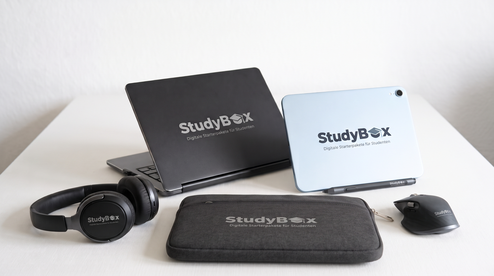
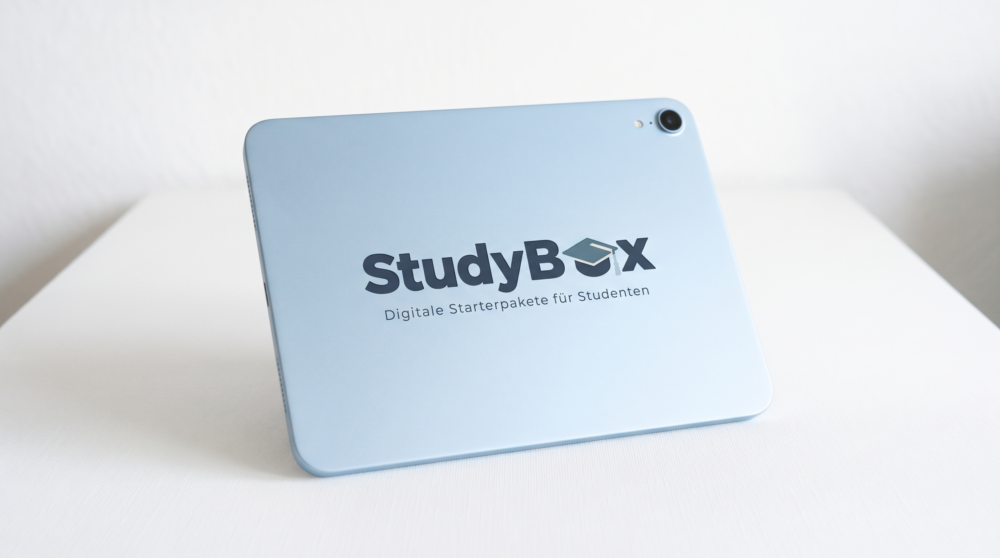

Lea M.
★★★★★
Ich nutze das Notebook für Hausarbeiten und Dokumentationen. Das Tablet ist außerdem praktisch, um Skripte und Vorlesungsnotizen digital dabeizuhaben.


Das Soziales & Gesundheit Bundle wurde speziell für Studierende sozialer und gesundheitsbezogener Studiengänge entwickelt. Es unterstützt dich bei Vorlesungen, Praxisphasen, Dokumentationen, Fallarbeiten, Recherchen und der Organisation deines Studienalltags.
Studiengänge im Sozial- und Gesundheitsbereich zeichnen sich durch einen hohen Anteil an Dokumentationen, Fallanalysen, Praxisphasen und wissenschaftlichen Arbeiten aus. Das Soziales & Gesundheit Bundle bietet die passende technische Ausstattung für Lernen, Organisation und professionelles Arbeiten im Studienalltag.
Für Soziale Arbeit sowie Gesundheits- und Pflegestudiengänge reichen als Richtwert 8 GB Arbeitsspeicher und 256 GB interner Speicher aus. Ein Tablet ist nützlich für Mitschriften und Lernunterlagen. Prüfe zusätzlich die Anforderungen deiner Hochschule und der verwendeten Software.

Das Notebook dient als zentrale Arbeitsplattform für Hausarbeiten, Präsentationen, Dokumentationen, Fallanalysen und wissenschaftliche Recherchen. Es ermöglicht flexibles Arbeiten in Hochschule, Praxisstelle und Zuhause.

Das Tablet erleichtert die digitale Organisation von Vorlesungsunterlagen, Skripten und Mitschriften. Es eignet sich hervorragend für mobile Vorlesungen und Lernphasen unterwegs.

Mit dem Tablet-Stift können Vorlesungsmitschriften, Lernzusammenfassungen, Mindmaps und Notizen direkt digital erstellt und organisiert werden.

Die kabellosen Kopfhörer ermöglichen konzentriertes Lernen, Online-Vorlesungen, Webinare und digitale Gruppenarbeiten. Sie helfen dabei, Ablenkungen im Alltag auszublenden.

Die ergonomische Maus erleichtert die tägliche Arbeit am Notebook und sorgt für komfortables Navigieren durch Lernplattformen, Dokumentationen und Präsentationen.

Die gepolsterte Laptoptasche schützt Notebook und Zubehör während des täglichen Transports zwischen Hochschule, Praxisstelle und Zuhause.
Ich nutze das Notebook für Hausarbeiten und Dokumentationen. Das Tablet ist außerdem praktisch, um Skripte und Vorlesungsnotizen digital dabeizuhaben.
Die Geräte lassen sich gut zwischen Hochschule und Praxisstelle mitnehmen. Die Kopfhörer helfen mir, mich beim Lernen und in Online-Vorlesungen zu konzentrieren.
Eine sinnvolle Zusammenstellung für meinen Studienalltag. Mitschriften und Lernunterlagen kann ich mit dem Tablet-Stift einfach digital organisieren.